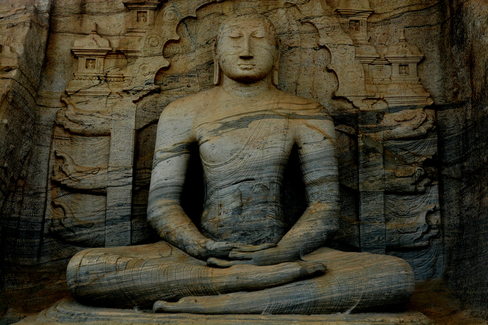
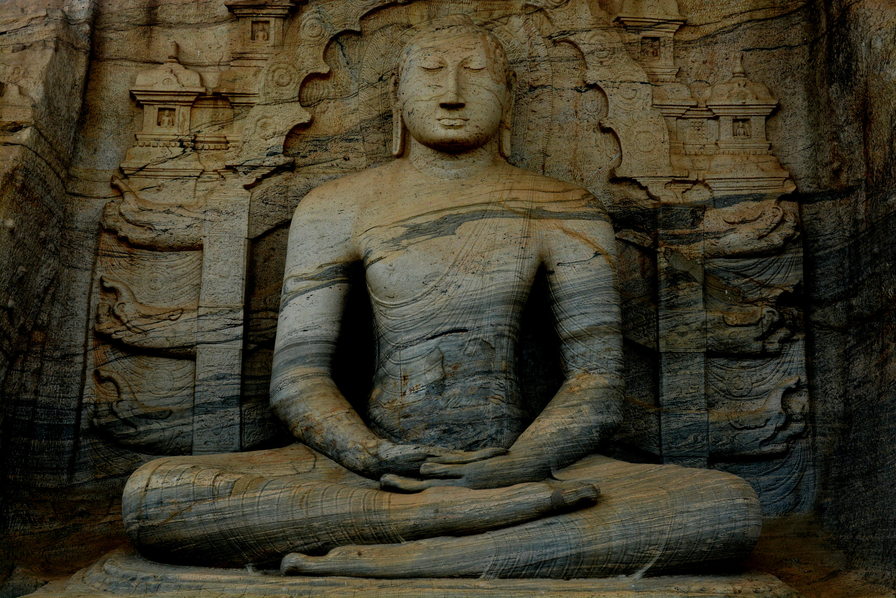

Introduction to Sri Lanka
Welcome to our website! We provide exceptional services tailored to meet your unique needs. Our mission is to share the beauty of Sri Lanka with the world and create unforgettable travel experiences. Explore our services, and let us guide you on your next adventure!
Wonderful Island
Sri Lanka, a jewel in the Indian Ocean, With landscapes rich, and history well-spoken. Golden beaches kiss the azure shore, While mountains rise with beauty galore.Its culture, ancient, yet ever so bright, A blend of traditions, a shining light. Tea gardens stretch, green as can be, And wildlife roams, wild and free. From sacred sites to bustling streets, Sri Lanka’s charm never retreats. A paradise, serene and grand, A true treasure, nature’s hand. 🌴🌺


Camping Under the Stars
In Sri Lanka, where the sky is vast, Camping under the stars, a memory to last. With nature’s whispers and the moon’s soft glow, The night unfolds in a mystical show. By the beach, where the waves gently break, Or in the hills, where the cool winds wake, The jungle hums with life so near, As you lay back, without a fear. Stars twinkle like diamonds, high and bright, A canvas of wonder in the quiet night. The scent of earth, the fire’s warm glow, A sense of peace, as the breezes blow. Around the campfire, stories are told, Of ancient kings and legends bold. Sri Lanka’s heart beats with the land, A perfect night, so pure, so grand. 🌟🔥🏕️


Rich Culture and Heritage
Sri Lanka, a land of timeless grace, Where culture and heritage find their place. From ancient kingdoms, stories unfold, In temples and ruins, histories told. In the dance of Kandyan, vibrant and true, With drumming rhythms that stir the soul too. Silk and handwoven fabrics so fine, Reflect the art, where tradition aligns. The sacred tooth relic, revered and bright, Symbolizes a heritage, rich in light. From the Sigiriya rock, high in the sky, To the ruins of Anuradhapura, we sigh. Festivals bloom like flowers in spring, With colors and rituals that joyously sing. The Sinhala and Tamil New Year’s delight, In feasts and games, from dawn till night. Tea leaves on hills, cultivated with care, A symbol of a legacy, beyond compare. Sri Lanka's culture, a vibrant embrace, A treasure of wisdom, a radiant place. 🌸🏛️🎶
 


Serene Natural Beauty
Relax amidst the serene beauty of Sri Lanka's beaches...


Adventures Await
Sri Lanka, a paradise pure and bright, Where nature’s beauty fills day and night. From golden shores to misty heights, A land of wonders, a tranquil sight. The beaches stretch, soft sands invite, Where turquoise waters kiss the light. Palm trees sway in a gentle breeze, As waves hum songs of peaceful seas. In the hills, where tea plantations grow, The air is fresh, the winds softly blow. Waterfalls cascade, a sparkling dream, Flowing like silver, in sun’s warm beam. The forests whisper secrets old, With creatures rare and stories bold. Elephants roam, with grace untold, In the jungles green, so wild and bold. Sri Lanka's beauty, serene and true, A land where peace and nature renew. From tranquil lakes to towering trees, A haven of calm, a place to seize. 🌿🌊🌄